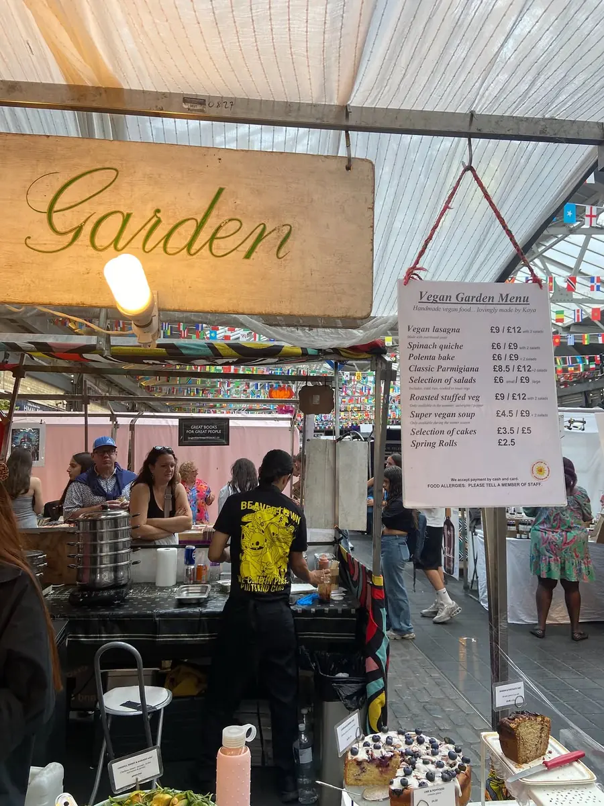

The stall
A table fullof colour
A hand-painted sign, a string of bunting, a green leaf-print cloth and a table you can barely see for food. That's Vegan Garden, one of the stalls under Greenwich Market's glass roof.



Lovingly made by Kaya
Home cooking, by the trayful
Every dish on the table is handmade by Kaya: lasagna layered in deep trays, quiches and tarts in fluted tins, bowls of slaw and roast veg, and cakes stacked on vintage stands.
It's honest, generous food that happens to be entirely vegan, the kind you'd come back for even if you weren't.
Handmade
Lasagna, quiche, parmigiana, spring rolls and cakes, all made by hand rather than bought in.
Plant-based, start to finish
Everything on the table is vegan. Every cake carries a label listing its allergens.
Following the seasons
Stuffed aubergines and peppers in summer, a super vegan soup through winter, fruit tarts as the fruit comes in.
What people say
In their own words
“London's best kept vegan secret?”
Instagram story, Greenwich Park“Picked up vegan lasagne and salads. So. Freaking. Good.”
Instagram story“The most divine fresh food with so many options.”
Instagram reel, Greenwich Market“Yummy, and the most delicious spring roll.”
Instagram reel“Thank you, will be coming for the vegan lasagne next.”
Instagram reel“Look no further than Vegan Garden London. Thank you Kaya!”
Customer postGallery